pdhg¶
-
odl.solvers.nonsmooth.primal_dual_hybrid_gradient.pdhg(x, f, g, L, tau, sigma, niter, **kwargs)[source]¶ Primal-dual hybrid gradient algorithm for convex optimization.
First order primal-dual hybrid-gradient method for non-smooth convex optimization problems with known saddle-point structure. The primal formulation of the general problem is:
min_{x in X} f(L x) + g(x)
where
Lis an operator andfandgare functionals.The primal-dual hybrid-gradient algorithm is a primal-dual algorithm, and basically consists of alternating a gradient ascent in the dual variable and a gradient descent in the primal variable. The proximal operator is used to generate a ascent direction for the convex conjugate of F and descent direction for G. Additionally an over-relaxation of the primal variable is performed.
Parameters: x :
L.domainelementStarting point of the iteration, updated in-place.
f :
FunctionalThe function
fin the problem definition. Needs to havef.convex_conj.proximal.g :
FunctionalThe function
gin the problem definition. Needs to haveg.proximal.L : linear
OperatorThe linear operator that should be applied before
f. Its range must match the domain offand its domain must match the domain ofg.tau : positive float
Step size parameter for the update of the primal (
g) variable.sigma : positive float
Step size parameter for the update of the dual (
f) variable.niter : non-negative int
Number of iterations.
Other Parameters: callback : callable, optional
Function called with the current iterate after each iteration.
theta : float, optional
Relaxation parameter, required to fulfill
0 <= theta <= 1. Default: 1gamma_primal : non-negative float, optional
Acceleration parameter. If not
None, it overridesthetaand causes variable relaxation parameter and step sizes to be used, withtauandsigmaas initial values. Requiresgto be strongly convex andgamma_primalbeing upper bounded by the strong convexity constant ofg. Acceleration can either be done on the primal part or the dual part but not on both simultaneously. Default:Nonegamma_dual : non-negative float, optional
Acceleration parameter as
gamma_primalbut for dual variable. Requiresf^*to be strongly convex andgamma_dualbeing upper bounded by the strong convexity constant off^*. Acceleration can either be done on the primal part or the dual part but not on both simultaneously. Default: ``None`x_relax :
op.domainelement, optionalRequired to resume iteration. For
None, a copy of the primal variablexis used. Default:Noney :
op.rangeelement, optionalRequired to resume iteration. For
None,op.range.zero()is used. Default:NoneSee also
odl.solvers.nonsmooth.douglas_rachford.douglas_rachford_pd- Solver for similar problems which can additionaly handle infimal convolutions and multiple forward operators.
odl.solvers.nonsmooth.forward_backward.forward_backward_pd- Solver for similar problems which can additionaly handle infimal convolutions, multiple forward operators and a differentiable term.
Notes
The problem of interest is
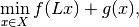
where the formal conditions are that
 is an operator
between Hilbert spaces
is an operator
between Hilbert spaces  and
and  .
Further,
.
Further, ![g : X \rightarrow [0, +\infty]](../_images/math/ba91718a830a51d84eaab9a5f6e8dfcfa7e291da.png) and
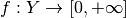 are proper, convex,
lower-semicontinuous functionals.
and
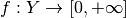 are proper, convex,
lower-semicontinuous functionals.Convergence is only guaranteed if
is linear, 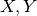
are finite dimensional and the step lengths  and
and
 satisfy
satisfy
where
 is the operator norm of .
is the operator norm of .It is often of interest to study problems that involve several operators, for example the classical TV regularized problem
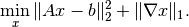
Here it is tempting to let 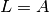, 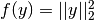 and 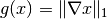. This is however not feasible since the proximal of 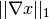 has no closed form expression.
Instead, the problem can be formulated 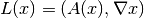, 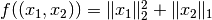, 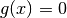. See the examples folder for more information on how to do this.
For a more detailed documentation see the PDHG guide in the online documentation.
References on the algorithm can be found in [CP2011a] and [CP2011b].
This implementation of the CP algorithm is along the lines of [Sid+2012].
The non-linear case is analyzed in [Val2014].
References
[CP2011a] Chambolle, A and Pock, T. A First-Order Primal-Dual Algorithm for Convex Problems with Applications to Imaging. Journal of Mathematical Imaging and Vision, 40 (2011), pp 120-145.
[CP2011b] Chambolle, A and Pock, T. Diagonal preconditioning for first order primal-dual algorithms in convex optimization. 2011 IEEE International Conference on Computer Vision (ICCV), 2011, pp 1762-1769.
[Sid+2012] Sidky, E Y, Jorgensen, J H, and Pan, X. Convex optimization problem prototyping for image reconstruction in computed tomography with the Chambolle-Pock algorithm. Physics in Medicine and Biology, 57 (2012), pp 3065-3091.
[Val2014] Valkonen, T. A primal-dual hybrid gradient method for non-linear operators with applications to MRI. Inverse Problems, 30 (2014).